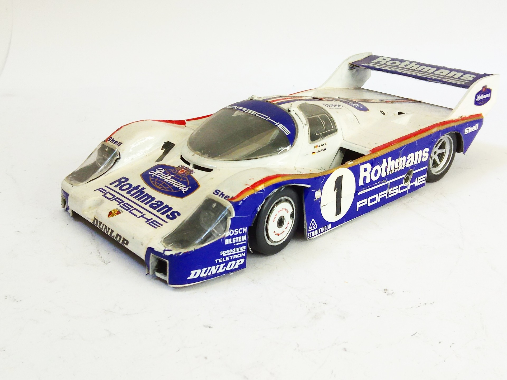
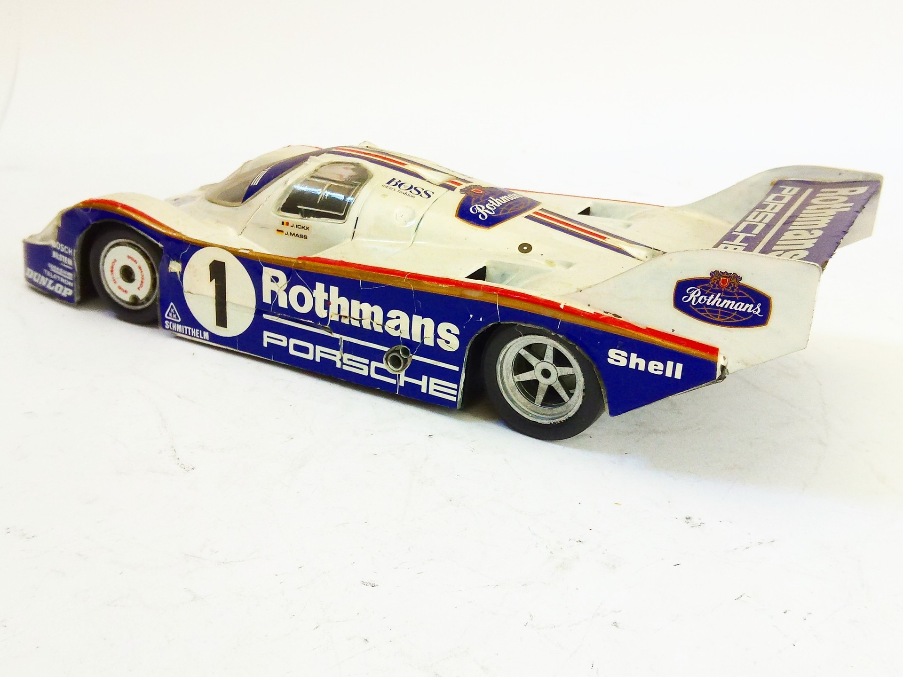

Auto e veicoli stradali · scale model archive
Porsche 956 Rothmans
Porsche 956 Rothmans — Kit: Protar, Scale: 1/24. White metal body #1/24 #Protar

Photo gallery

English description
White metal body
#1/24 #Protar
Descrizione italiana
White metal body.